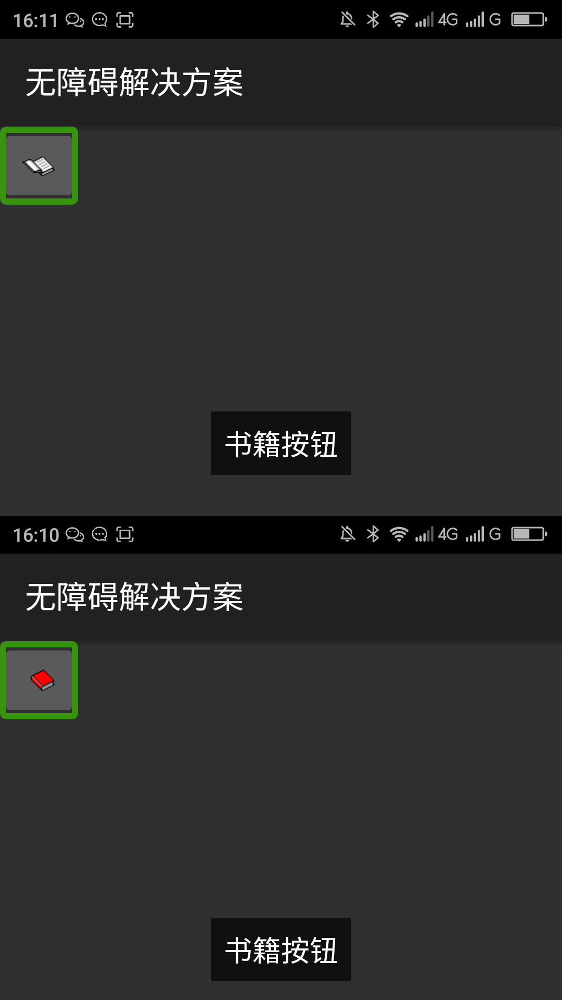
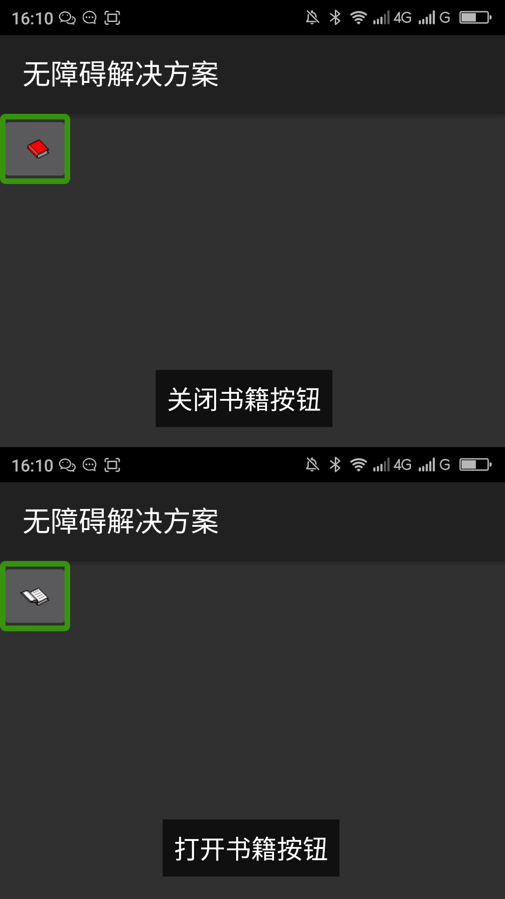

返回
图形按钮等控件的功能改变但是替代文本没有改变屏幕阅读器用户无法清楚的知道此控件的功能已经改变，给用户使用产品带来很大的困扰。
下面是MainActivity.java代码，此代码中按钮的功能改变但是替代文本没有改变
下面是MainActivity.xml中的代码:
图形按钮等控件的功能改变的时候应该随功能的改变改变替代文本，让用户能清除的知道现在此控件的功能。在代码中可以用setContentDescription()方法改变android:contentDescription属性。
下面是MainActivity.java代码，此代码中按钮的功能改变但是替代文本没有改变
下面是MainActiv ity.xml中的代码:
|  |  |
| 优化前，未点击和点击后分别朗读“书籍按钮”“书籍按钮” | 优化后，未点击和点击后分别朗读“关闭书籍按钮”“打开书籍按钮” |